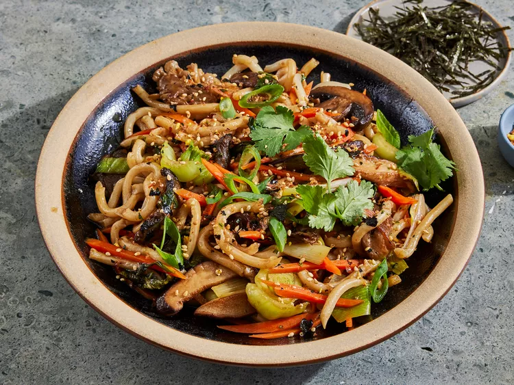

Yaki Udon

Description
Yaki Udon is a classic Japanese stir-fry dish with udon noodles and lots of vegetables in a soy-based sauce. Feel free to add meat or tofu.
Ingredients
- ¼ cup oyster sauce
- ¼ cup soy sauce
- 2 tablespoons white sugar
- 2 tablespoons vegetable oil
- 1 tablespoon minced fresh ginger root
- 1 tablespoon minced garlic
- 1 pound skinless, boneless chicken thighs, cut into bite-size pieces
- 1 (16 ounce) package udon noodles
- 1 bunch green onions, cut into 1-inch pieces
- 1 (8 ounce) package fresh mushrooms, sliced
- 1 (8 ounce) package snow peas
Directions
-
Whisk together oyster sauce, soy sauce, mirin, rice vinegar, Worcestershire, sesame oil, sugar, Sriracha, and garlic in a small bowl; set aside.
Remove root ends from scallions and discard. Chop whites and light greens into 2-inch pieces and quarter pieces lengthwise; set aside.
Thinly slice remaining dark greens of scallions and reserve for garnish.
-
Heat oil in a large skillet or wok over medium-high heat. Add mushrooms in a single layer and cook, undisturbed, until browned on first side, about 3 minutes.
Stir and continue to cook, stirring occasionally, until mushrooms are tender and golden brown on both sides, about 4 more minutes.
Add bok choy, carrots, sliced whites and light greens of scallions, and 1/4 cup water to pan with mushrooms.
Cook, stirring occasionally, until vegetables are just tender, about 3 minutes.
-
Add udon noodles and remaining 1/4 cup water and cook, gently separating noodles with tongs or spoon.
Add reserved oyster sauce mixture and cook, stirring constantly, until noodles and vegetables are well-coated, about 1 minute.
Divide among serving bowls and garnish with reserved sliced greens of scallions and optional garnishes.
Serve immediately.
Back to
Home Page